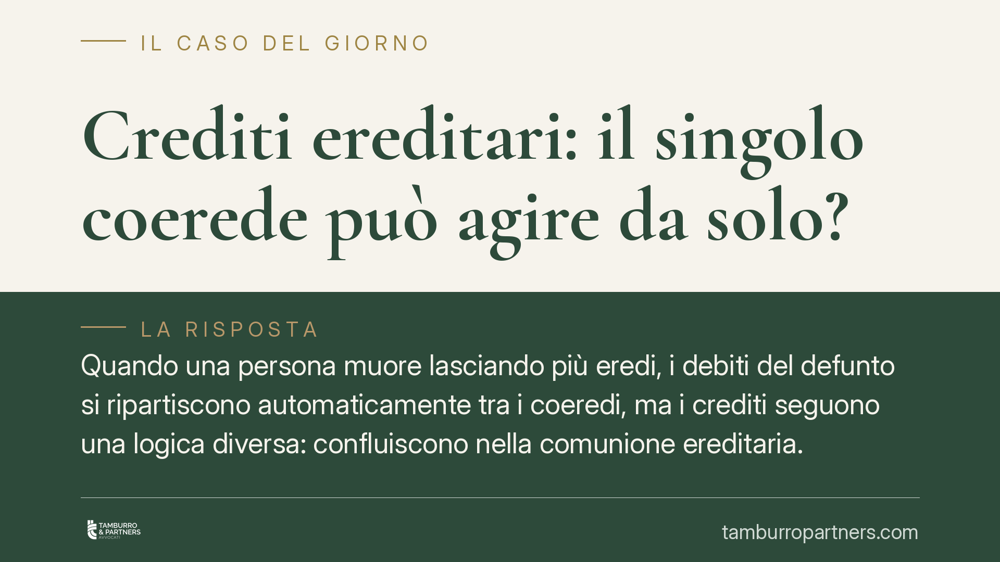

Crediti ereditari: il singolo coerede può agire da solo?
Quando una persona muore lasciando più eredi, i debiti del defunto si ripartiscono automaticamente tra i coeredi, ma i crediti seguono una logica diversa: confluiscono nella comunione ereditaria. Questo apre una domanda pratica ricorrente: il singolo coerede può agire da solo contro il debitore per recuperare quanto dovuto? La risposta, non pacifica, va cercata nella giurisprudenza di legittimità.

Il problema pratico
Un padre muore lasciando tre figli e un credito di 30.000 euro verso un ex socio. Uno solo dei figli vuole agire per il recupero; gli altri sono irreperibili o inerti. Può procedere da solo? E se sì, per l'intero importo o solo per la propria quota? È una situazione frequente, e la risposta incide sulla strategia processuale.
L'inquadramento normativo
Il punto di partenza è la differenza di trattamento tra debiti e crediti del defunto.
Per i debiti la regola è chiara: l'art. 752 del Codice civile stabilisce che i coeredi contribuiscono al pagamento dei debiti ereditari in proporzione alle rispettive quote. Il debito, quindi, si fraziona automaticamente al momento dell'apertura della successione: ogni erede risponde pro quota.
Per i crediti non esiste una norma speculare che ne preveda la ripartizione automatica. Questa asimmetria è stata affrontata dalle Sezioni Unite della Cassazione con la sentenza n. 24657 del 28 novembre 2007, tuttora punto di riferimento. Le Sezioni Unite hanno chiarito che i crediti del defunto non si dividono automaticamente tra i coeredi, ma entrano a far parte della comunione ereditaria. In altre parole, il credito resta "indiviso" finché non interviene la divisione.
Va tenuto distinto l'art. 757 c.c., che riguarda tutt'altro: l'effetto *dichiarativo* della divisione. Stabilisce che, una volta divisa l'eredità, ogni coerede è considerato titolare esclusivo dei beni assegnatigli sin dall'apertura della successione. Non disciplina, però, la sorte dei crediti prima della divisione: per questo non va invocato a sostegno della caduta in comunione.
La questione aperta: chi può agire?
Stabilito che il credito appartiene alla comunione, resta il nodo più delicato: il singolo coerede ha il potere di agire da solo per riscuoterlo, e per quale importo?
Su questo l'orientamento non è del tutto uniforme. Un conto è l'appartenenza del credito alla comunione (pacifica dopo le Sezioni Unite del 2007); altro è il potere di riscossione del singolo coerede.
La linea prevalente riconosce al singolo coerede la legittimazione ad agire anche per l'intero credito, senza necessità di coinvolgere gli altri eredi. La ragione è pratica e sistematica: non si configura un'ipotesi di litisconsorzio necessario — cioè un caso in cui la causa deve obbligatoriamente vedere la partecipazione di tutti i coeredi, pena l'invalidità del giudizio. Il credito è unico e indivisibile fino alla divisione, e l'azione del singolo giova alla comunione nel suo complesso.
Resta però fermo un limite sostanziale: ciò che il coerede incassa non gli appartiene in via esclusiva. La somma recuperata rientra nella massa ereditaria e dovrà essere rendicontata in sede di divisione, per essere ripartita secondo le quote. Chi agisce, insomma, non "guadagna" l'intero: anticipa un'attività nell'interesse comune.
Implicazioni pratiche
Per chi si trova in questa situazione il vantaggio è evidente: non serve attendere l'accordo o la collaborazione degli altri eredi per avviare il recupero. Un credito a rischio di prescrizione o un debitore che sta dilapidando il patrimonio possono essere affrontati tempestivamente da un solo coerede.
Tuttavia, l'operazione va impostata con precisione. Il margine di incertezza giurisprudenziale sul potere di riscuotere l'intero suggerisce prudenza nella formulazione della domanda e nella gestione delle somme incassate. Agire in modo scomposto espone al rischio di contestazioni interne tra coeredi in fase divisoria.
Cosa fare in concreto
- Verificate la prescrizione del credito prima di qualunque decisione: se è prossima, l'azione tempestiva del singolo coerede può interrompere i termini a beneficio di tutti.
- Documentate ogni somma incassata tenendola distinta dal patrimonio personale: andrà rendicontata e divisa pro quota.
- Informate gli altri coeredi dell'azione intrapresa, anche per iscritto: riduce i margini di conflitto nella successiva divisione.
- Valutate con un legale la formulazione della domanda, chiarendo se agite per l'intero o per la vostra quota, alla luce dell'orientamento applicabile.
- Evitate accordi transattivi autonomi sul credito comune senza il consenso degli altri eredi: potrebbero non essere opponibili.
La materia è più sfumata di quanto appaia. La soluzione corretta dipende dall'importo, dallo stato dei rapporti tra coeredi e dall'esistenza o meno di una divisione già avviata.
---
*Contributo informativo a cura di Tamburro & Partners — Avv. Giuseppe Tamburro. Non costituisce parere legale.*
Ogni famiglia ha il suo equilibrio.
Separazione, divorzio, affidamento, assegno: se vuoi un confronto riservato su una specifica situazione, scrivi allo studio. Ti rispondiamo entro un giorno lavorativo.